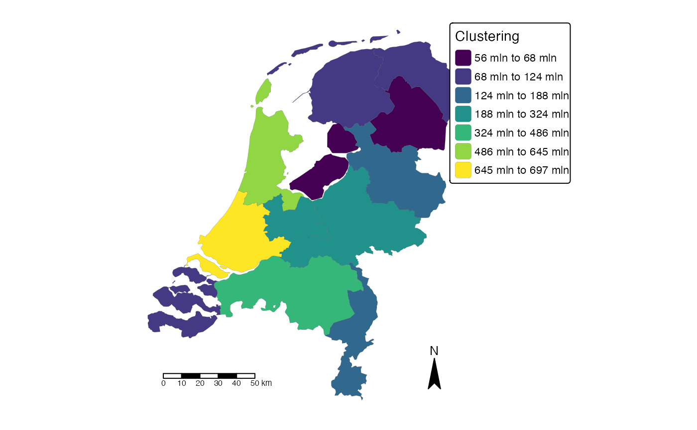

Takes an object produced by points_to_polygon(), and
creates the corresponding choropleth map. The given clustering is according
to the Fisher-Jenks algorithm. This commonly used method for choropleths
seeks to reduce the variance within classes and maximize the variance
between classes.
Usage
choropleth(
sf_object,
value = "output",
id_name = "areaname",
mode = "plot",
n = 7,
legend_title = "Clustering",
palette = "viridis"
)Arguments
- sf_object
object of class sf
- value
column name to shade the polygons
- id_name
column name of ids to plot
- mode
choose between static ('plot' is default) and interactive map ('view')
- n
number of clusters (default is 7)
- legend_title
title of legend
- palette
palette name or a vector of colors. See
tmaptools::palette_explorer()for the named palettes. Use a-as prefix to reverse the palette. The default palette is "viridis".
Examples
test <- points_to_polygon(nl_provincie, insurance, sum(amount, na.rm = TRUE))
#> 109 points fall not within a polygon.
choropleth(test)
#> -- tmap v3 code detected --
#> [v3->v4] tm_polygons(): instead of 'style = "fisher"', use 'fill.scale = tm_scale_intervals()' and migrate the argument(s) 'style', 'n', 'palette' (rename to 'values') to 'tm_scale_intervals(<HERE>)'
#> [v3->v4] tm_polygons(): migrate the argument(s) related to the legend of the visual variable 'fill', namely 'title' to 'fill.legend = tm_legend(<HERE>)'
#> As of version 4.0, 'tm_scale_bar()' is deprecated. Please use 'tm_scalebar()' instead.FALSE

choropleth(test, id_name = "areaname", mode = "view")
#> -- tmap v3 code detected --
#> [v3->v4] tm_polygons(): instead of 'style = "fisher"', use 'fill.scale = tm_scale_intervals()' and migrate the argument(s) 'style', 'n', 'palette' (rename to 'values') to 'tm_scale_intervals(<HERE>)'
#> [v3->v4] tm_polygons(): use 'fill_alpha' instead of 'alpha'
#> [v3->v4] tm_polygons(): migrate the argument(s) related to the legend of the visual variable 'fill', namely 'title' to 'fill.legend = tm_legend(<HERE>)'